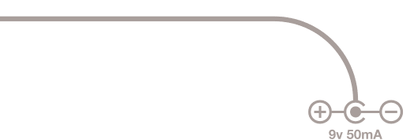

MIDI TO
EXPRESSION
TRANSLATOR
NOISE ENDEAVORS
Introduction
Language is hard: let’s start at the start.
Communication is complex, beautiful, a real thorn in our sides.
Many languages, dialects, standards
Some similar, some vastly different.
A linear sweep, a barrage of bits.
Music, of course, is meant to be the universal language, but our devices don’t see it that way. One could argue even we don’t see it that way—tonal and microtonal, East+West, free jazz and bubblegum pop.
But we’re not here to argue.
We’re here to blame the devices.
The MIDI To Expression Translator (MTET) does exactly what it says on the tin. It receives MIDI messages from external MIDI devices and uses those MIDI messages to create four separate Expression outputs for use with external expression-enabled devices.
Message System
The message system is as follows:
From the factory, MTET is set to MIDI Channel 1. It will ignore messages sent on other channels.
To assign the value of an Expression out, CC messages are used. A CC message uses two values: the first should match the Expression out (1-4), and the second assigns a value from 0-127. You can use this to snap to a particular value or sweep through values continuously. It’s all up to your MIDI controller and what you tell it to do.
While MIDI messages range in value from 0-127, the expression outs can range in value from 0-255. In most cases, you will not need the extra bit of resolution, as sending values 0-127 will create values 0-255 by moving two at a time and ensuring minimum and maximum at 0 and 127.
However, if something needs to be adjusted slightly, a Least Significant Bit CC can be used:
CC 11-14 will accept values of 0 or 1 to fine-tune the value of CC 1-4 (Expression Out 1-4).
For example:
CC 1 100 followed by CC 11 0 creates a value of 200 (100 * 2 + 0).
CC 1 100 CC 11 1 creates a value of 201 (100 * 2 + 1).
There is one special CC message: CC 100.
This is used to change MTET’s MIDI Channel. Using CC 100, use any value from 1-16 to assign MTET’s new channel. For example:
If MTET is currently on channel 1, sending CC 100 5 on channel 1 will reassign it to channel 5. It will then only pay attention to messages on channel 5. To set it back to 1, send CC 100 1 on channel 5.
Upon successful reassignment, MTET will blink the EXP 1-4 LEDs.
The number of blinks indicates the new channel. This blinking also happens on startup, so if you ever forget what channel MTET is on, simply unplug the power, plug it back in, wait a couple seconds, then count the number of LED blinks.
MIDI, thankfully, is a communication standard. MTET is configured to communicate with other devices using this standard. Expression, regretfully, is not so standardized. MTET’s primary purpose is to interface with Old Blood Noise Endeavors pedals and serve as a communicator between them and a MIDI controller.
Expression Setup
However, it will work with many other units that use the same expression setup as OBNE. MTET uses a 50k digital pot, wired for TRS connection with the tip active (connected to the wiper). It is assumed the external expression-enabled unit will apply ground to the Sleeve and reference voltage to the Ring.
Finally, there is one more feature:
THRU
MIDI THRU jack.
This is used to send copies of incoming messages back out through another MIDI cable, in order to daisy chain with other MIDI devices.
FAQ and Troubleshooting
Why isn’t MTET working with a particular pedal?
Check the manual for your pedal - does its expression setup match the OBNE setup? Then check your TRS cable - it’s incredible how often these fail! When in doubt, reach out to us through our website.

Nothing seems to be happening?First, check the power LED. MTET requires 50mA of 9v center negative power, and the power LED will show that power is flowing.
Then, check the MIDI-In LED. When you send MIDI messages, does MIDI-In light up? If it does not light, check your MIDI cables and connections, and ensure you are sending messages to MTET. If it does light, it is receiving messages.
Now, CC messages 1-4 should light up their corresponding LEDs. If not, double check your MIDI channel. Remove power from MTET, then plug power back in, then count the number of EXP 1-4 LED blinks on startup (the blinks will begin a few seconds after power-up). This represents MTET’s current MIDI channel. Make sure the device sending MIDI messages to MTET is sending those messages on the correct channel.
Does this output CV?
No. Control voltage is a voltage sent on a TS cable from the control device. Expression is a potentiometer in the control device connected to a TRS cable which expects voltage to exist on the other side.
So this turns expression pedals into MIDI signals?
No. There are other cool devices that do that. This does it the other way around, MIDI input translated to expression output.
MIDI COMMAND TABLE
| Function | CC Value | Range |
|---|---|---|
| Expression 1 MSB | 1 | 0-127 |
| Expression 1 LSB | 11 | 0-1 |
| Expression 2 MSB | 2 | 0-127 |
| Expression 2 LSB | 12 | 0-1 |
| Expression 3 MSB | 3 | 0-127 |
| Expression 3 LSB | 13 | 0-1 |
| Expression 4 MSB | 4 | 0-127 |
| Expression 4 LSB | 14 | 0-1 |
| MIDI Channel Assignment | 100 | 1-16 |
MTET requires 50mA center-negative 9v power.
Come find us. We are everywhere.
oldbloodnoise.com 2023